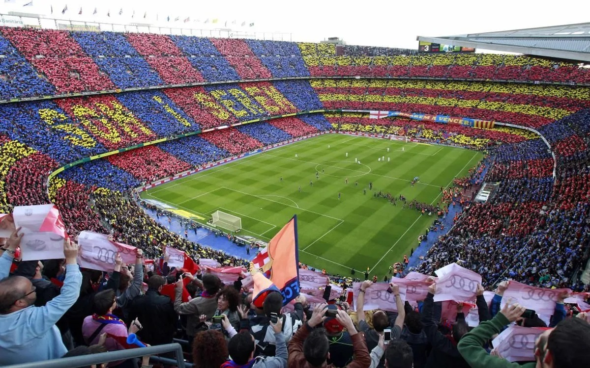

Things You Might have missed from my blog
A visit to Spain, The land of Flamenco and passionate culture.
Alhambra:

during my visit to Spain, I had the privilege of exploring the breathtaking Alhambra in Granada. As a Muslim traveler, I was particularly intrigued by the historical and cultural significance of this iconic palace complex. The intricate Islamic architecture, stunning courtyards, and ornate geometric designs left me in awe. I marveled at the Alhambra's blend of Moorish and Spanish influences. While I appreciated the artistic and architectural beauty, I also felt a profound connection to the history and heritage of Al-Andalus. The Nasrid Palaces were a highlight, and I couldn't help but imagine the lives of the people who once lived within these walls. My visit allowed me to appreciate the coexistence of different cultures in this remarkable setting. The Alhambra is a testament to the enduring legacy of Islamic art and culture in Spain, and it left me with a deep sense of reverence and appreciation for this historical gem.
La Rambla

During my trip to Barcelona, I had the pleasure of strolling down the famous La Rambla, a bustling tree-lined boulevard that's a vibrant hub of activity. It was a sunny afternoon, and the street was alive with people, street performers, and the tantalizing aromas of various foods from the nearby stalls. I couldn't resist stopping at one of the cafes for a coffee and a delicious pastry while watching the world go by. The street was lined with shops, kiosks, and flower stands, offering a wide variety of goods. I spent some time browsing the local crafts and souvenirs, and I even bought a beautiful piece of local artwork as a memento of my visit. La Rambla's lively atmosphere and the eclectic mix of people I encountered made it a memorable and enriching experience. It truly captured the spirit and energy of Barcelona.
Camp Nou:
As a passionate football enthusiast, my visit to Camp Nou, the iconic stadium of FC Barcelona, was a dream come true. The moment I set foot in this legendary arena, I was filled with excitement and awe, knowing that this was a place where football legends like Johan Cruyff, Carles Puyol, Lionel Messi, Ronaldinho, and so many others had made history. I arrived early, wanting to soak in every aspect of the experience and pay homage to these greats. The stadium's grandeur and the history that emanated from its walls left me speechless. I had booked a guided tour to explore every corner of the stadium, from the team's locker rooms, where I imagined the likes of Puyol donning the Blaugrana colors, to the press box and the museum showcasing the club's rich history, including memorabilia from the eras of Cruyff's "Dream Team" and the electrifying skills of Ronaldinho. The highlight, of course, was stepping onto the hallowed turf itself, where Messi had mesmerized millions with his magical plays. It was surreal to imagine myself playing in such an iconic setting, following in the footsteps of these football giants. In the club's megastore, I picked up a Barcelona jersey with Messi's name on the back, a fitting tribute to the greatest player to ever grace the Camp Nou pitch. My visit to Camp Nou was a pilgrimage for any football enthusiast, a journey that connected me to the heart and soul of the beautiful game, and to the legacy of those who had worn the Barcelona crest with pride. It was an experience I'll cherish for a lifetime, and a place where the magic of football truly came to life.